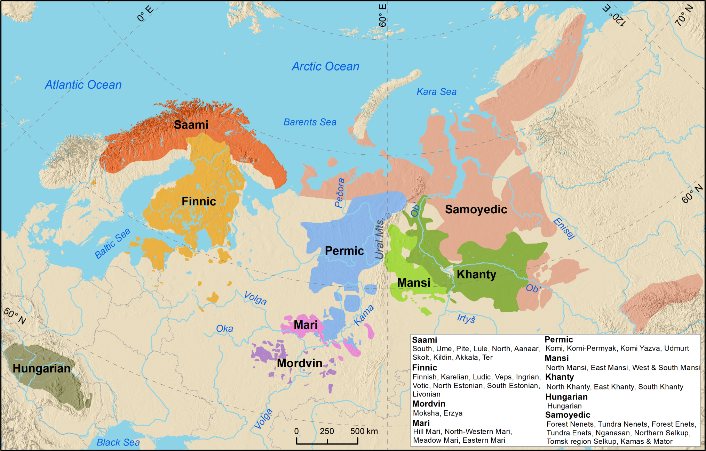

Majewicz A.F., Języki świata i ich klasyfikowanie, 1989.
Salminen T., On the demography, endangerment, and revitalization of the Uralic languages, [w:] The Uralic languages, ed. D. Abondolo, R.L. Valijärvi, 2023.